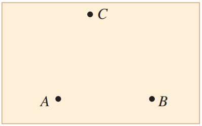
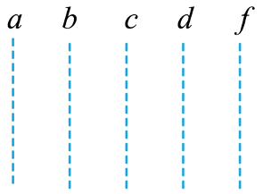

引入
（上一节课后题 6）一个电场中有 A、B 两点，电荷量 q_{1} 为 2\times 10^{-9}\;C 的试探电荷放在电场中的 A 点，具有 -4\times 10^{-8}\;J 的电势能；q_{2} 为 －3\times 10^{-9}\;C 的试探电荷放在电场中的 B 点，具有 9\times10^{-8}\;J 的电势能。现把 q_{3} 为 －5\times 10^{-9}\;C 的试探电荷由 A 点移到 B 点，静电力做正功还是负功？数值是多少？如果是 q_{4} 为 8\times 10^{-9}\;C 试探电荷呢？
电势差（电压）
概念
定义：我们将电场中两点电势之间的差值叫做电势差。
U_{AB}=\varphi_{A}-\varphi_{B}
单位：伏特
电势差就是电压，在静电场中更多用“电势差”，在电路中更多用“电压”
- 电势差是标量，有正负
U_{AB}>0\Rightarrow \varphi_{A}>\varphi_{B},\,U_{AB}<0\Rightarrow \varphi_{A}<\varphi_{B}
描述电势差时，必须指明是哪两点的电势差。如 U_{AB} 和 U_{BA}；
电势差与零电势点的选取无关；
电场中两点间的电势差，由电场本身的性质及初、末位置决定；
电势差的正负不表示方向，表示电场中两点电势的相对高低；
推论：U_{AC}=U_{AB}+U_{BC}
静电力做功与电势差的关系
电荷 q 从 A 点移动到 B 点，已知 U_{AB}，求电场力做的功。
W_{AB}=-\Delta E_{p}=E_{pA} - E_{pB}=q\varphi_{A}-q\varphi_{B}=qU_{AB}
已知静电力做功，求电势差。
U_{AB}=\frac{W_{AB}}{q}
电场中 A、B 两点间的电势差等于电场力做的功与电荷量 q 的比值
静电力做功的四种常用求法
- 功的定义法：W＝ FL\cos \theta 或 W＝ qEL\cos \theta 适用匀强电场；
- 电势差法：W_{AB}＝qU_{AB}；
- 电势能变化法：W_{AB}=-\Delta E_{p}=E_{pA} - E_{pB}；
- 动能定理：W_{电}+W_{其他力} = \Delta E_{k}
等势面
练习 (课后练习 6 )
如图所示，在与纸面平行的匀强电场中有 A、B、C 三个点，其电势分别为 6\;V、 2\;V 和 2\;V。试画出经过 A 点的一条电场线。

练习
图中虚线 a、b、c、d、f 代表匀强电场内间距相等的一组等势面，已知平面b上的电势为 4\;V。一电子经过 a 时的动能为 10\;eV，从 a 到 d 的过程中克服电场力所做的功为 6\;eV。下列说法正确的是（ ）
- 平面 c 上的电势为零
- 该电子可能到达不了平面 f
- 该电子经过平面 d 时，其电势能为 4\;eV
- 该电子经过平面 b 时的速率是经过 d 时的 2 倍
